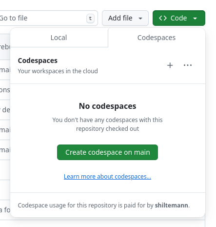
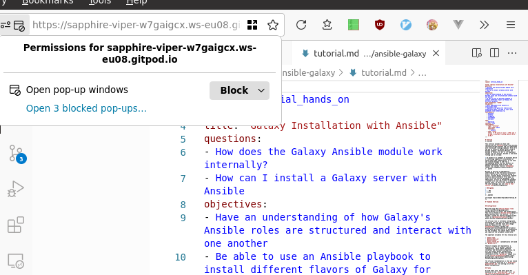
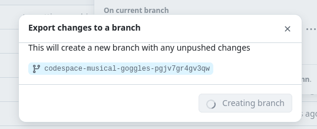
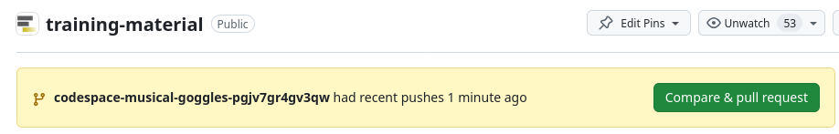

Running the GTN website online using GitHub CodeSpaces
| Author(s) |
|
OverviewQuestions:
Objectives:
How can I get a preview of the GTN website using GitHub CodeSpaces?
Preview the GTN website online via CodeSpaces
Make changes to the GTN website and preview those changes
Save the changes to your fork of the GTN repo
Create a pull request (PR) based on your changes
Time estimation: 30 minutesSupporting Materials:Published: Nov 11, 2024Last modification: Nov 11, 2024License: Tutorial Content is licensed under Creative Commons Attribution 4.0 International License. The GTN Framework is licensed under MITversion Revision: 1
If you are working on your own training materials and want preview them online without installing anything on your computer, you can do this using GitHub CodeSpaces! Everybody gets 60 free hours of CodeSpaces per month
AgendaIn this tutorial, you will learn how to contribute to the GTN website:
Launching CodeSpaces
Hands-on: Setting up GitPod
Navigate to the GTN GitHub repository, github.com/galaxyproject/training-material
Click on the green Code button
At the top, switch to the CodeSpaces tab 
- Click on Create codespace on main
- Note: if you switch to a specific branch in GitHub first, you can create a codespace for that branch
- This will setup a Visual Studio Code environment for you
- It may take a couple minutes to finish setting everything up
- In this environment you can also build the GTN website to preview your changes
- When everything is ready, you should see something like this:
The VScode environment
Let’s have a closer look at your CodeSpaces window:
- Left: Here you see all the files in the GTN repository
- Top: This is the main window where you can view and edit files
- Bottom: Terminal window. Here you can type commands (e.g. to build the website preview) and read output and error messages.
Build and preview the GTN website
Before we start making any changes, let’s build the website and get a live preview.
Hands-on: Setting up GitPod
In the terminal window (bottom), type the following command:
make preview
- This will take 2-3 minutes to complete
- When the build process is finished, a preview window will automatically open (at the top right)
- The preview will show the GTN 404 (codespace doesnt know what to show)
- Just click on Return to homepage.
If the preview window doesn’t open for you, or if you close it and want to reopen it, you can always do so as follows:
Go to the Ports tab of the bottom panel
Hover over the link in the Forwarded Address column, 3 icons should appear
Click on:
- The world/globe icon to open the GTN preview in a new window, or
- Or, click on the window icon to the right of the globe icon to preview the GTN in a tab inside the codespaces environment
If you opened the GTN preview inside the codespace, your window will now look something like this:
 Some browsers block popups by default, you may need to allow CodeSpaces to show popups in your browser.
Editing Training Materials on CodeSpaces
Now that you have the codespace environment working and we have a live preview up, let’s make some changes to the GTN materials and get an instant preview.
Scenario: You have spotted a typo in one of the tutorials, and would like to fix this and see the resulting GTN webpage.
Hands-on: Make and view changes
- In the preview of the GTN website, open the following tutorial:
- Topic: “Introduction to Galaxy Analyses” topic
- Tutorial: “A Short Introduction to Galaxy””
- We will edit this tutorial and watch the live preview window for the effects
On the file browser on the left, open the following file:
topics/introduction/tutorials/galaxy-intro-short/tutorial.md- Change the title of the tutorial
- From: “A Short Introduction to Galaxy”
- To: “A Short and Cool Introduction to Galaxy”
- Save the file
- CTRL+S to save the file
- You should immediately see a message in the terminal saying “regenerating”. CodeSpaces has detected your changes and is rebuilding the website.
- Move to the top right panel where the GTN is previewed and refresh the website
- galaxy-refresh Refresh button in front of the address bar of the preview panel
- You can also open the preview in it’s own brower tab, using the galaxy_instance button at the top-right corner of the preview window. Then you can reload the page the regular way (e.g. F5 or ctrl + r or the reload button in the browser)
It is possible that this reload button gives you the 404 again, in that case there are 2 solutions
- Right-click in the preview panel, and choose
- Chrome: “Reload Frame”
- Firefox: “This Frame -> Reload Frame”
- Open the preview in it’s own browser tab
- Click the galaxy_instance button at the top-right corner of the preview window
You should see the change you made:
In this way you can edit files in the text editor, and see the effects in the website preview.
Saving your changes back to GitHub
When you have finished your changes, it all looks good in the preview, you want to save your changes back to GitHub so that you can either continue later, or make a Pull Request to the GTN to contribute your changes.
Hands-on: Comitting changesFirst we commit our changes inside the codespace:
Next, we will push these changes to a branch/fork. We will do this from outside of our codespace for convenience.
Hands-on: Pushing changes to GitHub
- In your browser (outside of codespaces), navigate to the GTN GitHub page
- Click on the green Code button again
- Click on the 3-dots menu to the right of your (randomly generated) codespace name
- Choose Export changes to a branch
- For you, it could be Export changes to fork 
- Once it is done, click See branch button
- This will take you to the new branch
- Click the Compare & pull request button to create a PR for your changes 

{kind=link}
{kind=link}
{kind=link}
{kind=link}
{kind=link}
{kind=link}
{kind=link}
{kind=link}
{kind=link}
{kind=link}
{kind=link}
{kind=link}
{kind=link}
{kind=link}
Closing your CodeSpace
Everybody gets 60 hours per month for free on CodeSpaces. Your codespace will automatically shut down after 30 minutes of inactivity, but it is always a good idea to close your CodeSpace when you are finished with it, to conserve your quotum.
Hands-on: Shutting down your CodeSpace
Return to the GTN GitHub page
Click on the green Code button again
Under the Codespaces tab, you should see your running codespace
Click on the 3-dots menu to the right of your (randomly generated) codespace name
In this menu you can quit your codespace in two ways:
- Stop codespace: your changes will be kept and you can restart the codespace later
Delete your codespace. Any changes you did not commit and push to GitHub are lost.
- In this menu you can also resume a stopped codespace by simply clicking Open in Browswer
{kind=link}
Congrats! You learned how to contribute to the GTN by using the CodeSpaces environment!